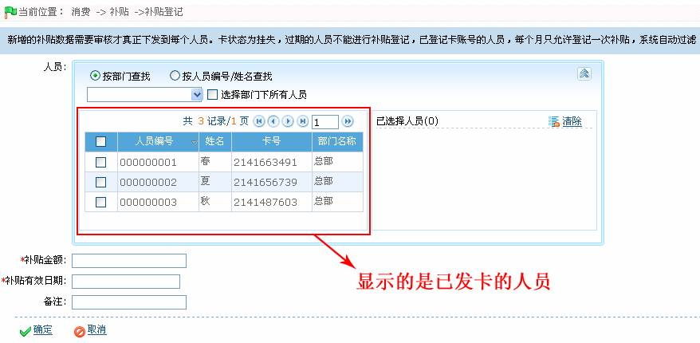
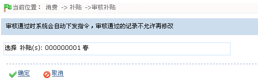
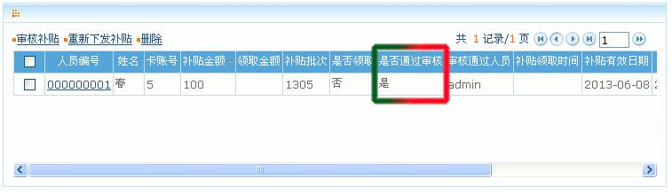
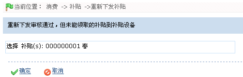
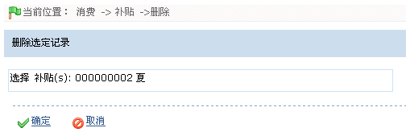

IC--8.3 补贴
点击【消费】 【补贴】，进入如下图所示补贴页面：
【补贴】，进入如下图所示补贴页面：

用户可在补贴页面进行补贴登记、审核补贴和补贴编辑等操作。
IC--8.3.1 补贴登记
1、点击【消费】 【补贴】
【补贴】 【补贴登记】图标，进入补贴登记页面：
【补贴登记】图标，进入补贴登记页面：

根据需要设置各参数，具体设置方法如下：
人员：选择需补贴登记的人员（可多选）。人员的选择请参见附录1 常用操作中的1人员选择
 备注：人员选择框中，显示是系统中所有已发卡的人员。
备注：人员选择框中，显示是系统中所有已发卡的人员。
补贴金额：输入补贴金额。
补贴有效日期：设置补贴的有效日期，日期的设置方法，请参见附录1 常用操作中的2. 选择日期。
2、设置完成后，单击【确定】按钮保存，并返回“补贴”页面；此时“补贴”列表中将显示刚登记的补贴。
 注意：新登记的补贴数据需要审核才真正下发到每个人员，审核补贴操作请参考IC--8.3.2 审核补贴。卡状态为挂失，停用，过期的人员不能进行补贴登记。
注意：新登记的补贴数据需要审核才真正下发到每个人员，审核补贴操作请参考IC--8.3.2 审核补贴。卡状态为挂失，停用，过期的人员不能进行补贴登记。
IC--8.3.2 审核补贴
（1）、补贴登记后，该补贴并未下发，只有当用户审核补贴通过后，方下发该补贴；
（2）、审核补贴时，系统中必须已添加补贴机（补贴机添加方法，请参见5.2.2 新增消费设备），否则无法审核补贴；
（3）、审核补贴通过后，系统会下发一条补贴指令到补贴机中，用户在补贴机上刷卡即可领取相应补贴。
审核补贴的具体操作方法如下：
1、在补贴页面的补贴列表中选中需审核的补贴，然后单击补贴列表左上方的【审核补贴】按钮，进入审核补贴页面：

2、单击【确定】按钮，审核通过该补贴，并返回补贴页面；此时该补贴的“是否通过审核”列的值显示为“是”，即已通过审核。

IC--8.3.3 重新下发补贴
由于补贴设备未连接网络等故障以致审核补贴通过后，补贴设备未接收到系统下发的补贴指令，而导致的无法正常领取补贴。此时，用户可重新下发补贴到补贴设备中，以便正常领取补贴，具体操作方法如下：
1、在补贴页面的补贴列表中，单击选中需重新下发的补贴，然后单击【重新下发补贴】按钮，进入重新下发补贴的确认页面。

2、单击【确定】按钮，重新下发补贴，并返回补贴页面。
IC--8.3.4 删除补贴
 注意：只有未通过审核的补贴记录（即“是否通过审核”为“否”的补贴），才能进行删除操作；否则不可删除。
注意：只有未通过审核的补贴记录（即“是否通过审核”为“否”的补贴），才能进行删除操作；否则不可删除。
具体操作方法如下：
1、在补贴页面的补贴列表中，单击选中需删除的补贴，然后单击【删除】按钮，进入删除补贴的确认页面：

2、单击【确定】按钮，删除被选定的补贴，并返回补贴页面；此时补贴列表中将不再显示该补贴。